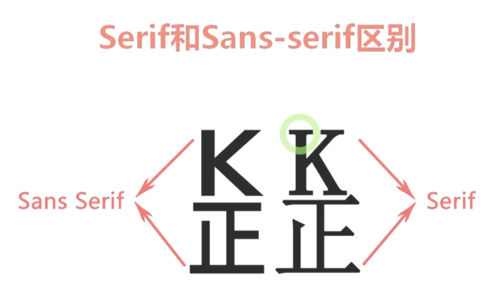
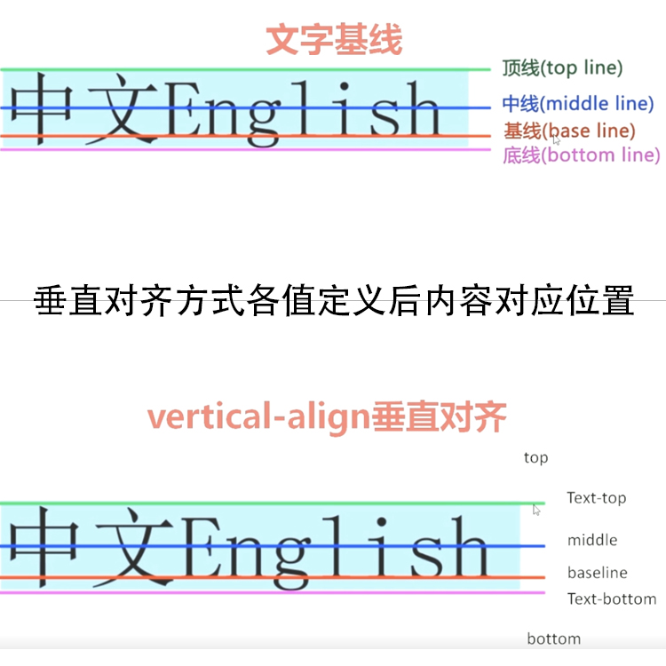

文字：颜色、字体大小、字体、加粗等
样式属性：
字体：font-family 定义元素内文字以什么字体来显示
语法：font-family:[字体1][,字体2][,...]
属性值：具体字体名，字体集
字体集：serif
sans-serif （较上个，字体多了装饰线，多用于标题文字，上个由于简易读些多用于大段文字中）

monospace
cursive
fantasy
（不同字体集有不同的文字装饰效果）
大小：font-size 定义元素内文字大小
语法：font-size:绝对单位|相对单位
（绝对单位在任何分辨率显示下大小不会发生改变，都是绝对的大小。但不推荐使用，因为在各种浏览器中显示的大小呈现不一样。其（第二组属性值）属性值之间的换算是根据一定的缩放系数来确定--css2缩放系数1.2）
（相对单位不像绝对大小不能随浏览器分辨率或父元素大小的改变而改变）
绝对单位属性值：in Inch，英寸。1英寸=2.54厘米
cm 1厘米=0.394英寸
mm 1毫米=0.1厘米
pt 磅，印刷的点数。72磅=1英寸
pc Pica，1pc=12pt
xx-small 9px
x-small 11px
small 13px
medium 16px 一般浏览器默认大小为mudium 16px
large 19px
x-large 23px
xx-large 28px
相对单位属性值：px 像素
em/%
（em和%都是针对于父元素，如果父元素没有设置大小那就是（使用）相当于父元素是浏览器默认大小）
颜色：font-color 定义元素内文字颜色
语法：color:颜色名|十六进制|RGB
（这么多颜色属性值不用都记住，可以通过查询“web安全色”来获知）
粗细：font-weight 为元素内文字设置粗细
语法：font-weight：normal|bold|bolder|lighter|100~900
样式：font-style 为元素内文字设置样式
语法：font-style:normal|italic|oblique
变形：font-variant 设置元素中文本为小型大写字母
语法：font-variant:normal|small-caps
（注意：只针对英文内容）
文本：行高、对齐方式、文本装饰等
样式属性：
对齐方式：text-align 设置元素内文本的水平对齐方式
语法：text-align:left|right|center|justify
注意：该属性只对块级元素设置有效；有继承性。比如想用此法设置图片居中对齐，需要在img标签外嵌套上div标签，然后设置div标签居中对齐（因为text-align有继承性，所以img可以继承div的居中对齐）。也因为img标签不是块级元素，而div是块级元素所以才要嵌套。另外知识点：span标签也不是块级元素
对齐方式：vertical-align 设置元素内容的垂直方式
语法：vertical-align:baseline|sub|super|top|text-top|middle|bottom|text-bottom|长度|百分比
注意：该属性只对行内元素生效，对块级元素不生效；span标签是行内元素，p标签是块级元素
属性值解释：该属性定义行内元素的基线相对于该元素所在行的基线的垂直对齐方式
另外：垂直对齐方式除了应用于行内元素外，还可应用于单元格元素
行高：line-height 设置元素中文本行高
语法：line-height:长度值|百分比
注意：用长度值设置行高的话，如果也设置了字体大小font-size，当行高小于字体大小时文本内容会发生重叠。说明了当字体大小发生变化行高不变的话，不同字体大小预览效果时行与行之间的距离不一样。
要想无论字体大小如何变化，行高也随之发生变化，可以使用em或者百分比%。em和%与字体大小有关系
该属性有继承性，值得一提的是，此继承的是计算后的值，不是直接把em或%的值继承过来
间距：word-spacing 设置元素内单词之间间距 注意：单词的判断以空格为准
letter-spacing 设置元素内字母之间间距
属性值可以是px也可以是em，可以正值也可以负值。默认值是0
大小写：text-transform 设置元素内文本的大小写
属性值：capitalize 每个首字母大写
uppercase 将字母设置成大写
lowercase 将字母设置成小写
none 无任何设置效果
装饰：text-decoration 设置元素内文本的装饰
属性值：underline 下划线（例如之前学过的a标签默认就有的下划线 可以用这个设置）
overline 上划线
line-through 贯穿线（和删除线效果一样）
blink 闪烁效果 (有兼容性问题，知道有此属性值就可以)
none 无任何设置效果，是该属性默认值
注意：同一个内容可以设置多个属性值，属性值和属性值之间用空格隔开
可应用于所有元素上（块级元素、行内元素）
此属性不能继承
——————————————————————————————————————————————————————————————————————————————————————————————————————————————————————————————————————————————————————————————————————————
|此块内容：字体字体|
当不设置字体大小时，默认为浏览器默认值
文字大小是0.5in
文字大小是0.5cm
文字大小是5mm
文字大小是15pt
文字大小是2pc
文字大小是xx-small
文字大小是x-small
文字大小是small
文字大小是medium
文字大小是large
文字大小是x-large
文字大小是xx-large
文字大小相对父元素文字大小变大
文字大小相对父元素文字大小变小
文字大小相对值em
文字大小相对值%
文字大小相对值%
之前学过的通过html标签：b 加粗
之前学过的通过html标签：strong 加粗
字体粗细：font-weight：normal
字体粗细：font-weight：bolder
字体粗细：font-weight：bold
字体粗细：font-weight：lighter
字体粗细：font-weight：100
字体粗细：font-weight：200
字体粗细：font-weight：300
字体粗细：font-weight：400
字体粗细：font-weight：500
字体粗细：font-weight：600
字体粗细：font-weight：700
字体粗细：font-weight：800
字体粗细：font-weight：900
—————————————————————————————————————————————————————————————————————————————————————————————————————————————————————————————————————————————————————————————————————————————————— |此块内容：字体样式|之前学过的通过html标签：em 斜体
之前学过的通过html标签：i 斜体
正常的字体
斜体
倾斜
—————————————————————————————————————————————————————————————————————————————————————————————————————————————————————————————————————————————————————————————————————————————————— |此块内容：字体变形|
这里相当于没设置时效果（默认效果）嗯嗯DaXIE
字体变形只针对英文内容,变成都是小型的大写字母ZheLiShiYInGWenZiMu
—————————————————————————————————————————————————————————————————————————————————————————————————————————————————————————————————————————————————————————————————————————————————— 上方为文字内容（大部分均需结合head处） ～～～～～～～～～～～～～～～～～～～～～～～～～～～～～～～～～～～～～～～～～～～～～～～～～～～～～～～～～～～～～～～～～～～～～～～～～～～～～～～～～～～～～～～～～～～～～～～～～～～～～～～～ 下方为文本内容（大部分均需结合head处） —————————————————————————————————————————————————————————————————————————————————————————————————————————————————————————————————————————————————————————————————————————————————— |此块内容：文本水平对齐方式|未学过css前也可以设置对齐方式，就像这里怎样设置。此处回顾知识点，左对齐
未学过css前也可以设置对齐方式，就像这里怎样设置。此处回顾知识点，居中对齐
未学过css前也可以设置对齐方式，就像这里怎样设置。此处回顾知识点，右对齐
未学过css前也可以设置对齐方式，就像这里怎样设置。此处回顾知识点，两端对齐
回顾：此处为行内样式设置对齐方式，样式属性。上方是align属性，两种都是写在p标签内，没能做到css和表现分离
这里是文本，一大段字这里是文本，一大段字这里是文本，一大段字这里是文本，一大段字这里是文本，一大段字这里是文本，一大段字
这里是文本，一大段字这里是文本，一大段字这里是文本，一大段字这里是文本，一大段字这里是文本，一大段字这里是文本，一大段字
这里是文本，一大段字这里是文本，一大段字这里是文本，一大段字这里是文本，一大段字这里是文本，一大段字这里是文本，一大段字
这里是文本，一大段字这里是文本，一大段字这里是文本，一大段字这里是文本，一大段字这里是文本，一大段字这里是文本，一大段字
因为text-align只对块级元素有效，所以想给p标签文字设置水平方式居中的话，要在p外加块级元素div，给div设置对齐方式居中即可，但这样会导致虽然文本内容居中了，但整体在不同浏览器会有不同的显示，如火狐等浏览器会左对齐居中，所以要想整块都居中显示，需要加上margin和auto
这联系head处，设置了垂直对齐方式，因为span为行内元素，所以生效，效果是span包着的”sub“变成下标样式sub
这里虽然也设置了class为sub的垂直对齐方式样式，但不生效，因为p标签不是行内元素sub
这联系head处，设置了垂直对齐方式，因为span为行内元素，所以生效，效果是span包着的”super“变成上标样式super
这五个值的效果如图：  具体每个值效果代码如下（配合head对应处）观察span内文字的不同 这没设置值
baseline：垂直对齐方式默认值 和上个没有设置样式的效果一样 基线baseline
top：元素的顶端和行内最高元素顶端对齐 顶端对齐top
texttop：与文本的顶端对齐 文本的顶端对齐texttop
middle：与中部（中线）对齐 中部对齐middle
textbottom：元素的底部与文本底端对齐 文字底端对齐textbottom
bottom：元素的底端与行内最低元素底端对齐 底端对齐bottom
middle：与中部（中线）对齐 中部对齐middle
长度下移在数字前写负（减）号“-” 上移就把“-”删掉 长度值
百分比下移也是在数字前写负（减）号“-” 上移就把“-”删掉 百分比
这里的100%相当于移动了1.5em。如果p标签没有设置行高：line-height，那它移动距离是根据基线与设置的数值去变动的（此处的话就是基于基线的100%距离） 百分比
| top | middle | bottom |
这里是单行文字
第一段
第二段
给第三段文字设置行高，行高是一行与一行的距离，文字足够多，表现才看得出来
第三段
这一段不弄样式，拿来对比效果（this is English）
虽 然 是 中 文 但 也 有 间 距 的 效 果 ， 因 为 这 里 有 空 格（this is English）
结合头部head可知，这里是每个字母都有间距了，包括中文，因为浏览器判断中英文是看空格的，这段文字没有空格所以当成字母处理（this is English）
——————————————————————————————————————————————————————————————————————————————————————————————————————————————————————————————————————————————————————————————————————————————————— |此块内容：大小写|这个没有设置效果(zhe li shi yiNgwen)
每个首字母大写(zhe li shi yiNgwen)，shou-zimu
将字母设置成大写(zhe li shi yiNgwen)
将字母设置成小写(zhe li shi yiNgwen)
相当于没有设置(zhe li shi yiNgwen)
——————————————————————————————————————————————————————————————————————————————————————————————————————————————————————————————————————————————————————————————————————————————————— |此块内容：装饰|这个没有设置效果(zhe li shi yiNgwen)
下划线效果(zhe li shi yiNgwen)
上划线效果(zhe li shi yiNgwen)
贯穿线效果(zhe li shi yiNgwen)
本应有闪烁效果(zhe li shi yiNgwen)
这个相当于没有设置效果(zhe li shi yiNgwen)
要想把a标签默认的下划线去掉只要给该标签设置text-decoration为none即可此处设置多个装饰属性值效果(zhe li shi yiNgwen)
此处设置多个装饰属性值效果,比上句多设了none所以等于没设置效果了(zhe li shi yiNgwen)